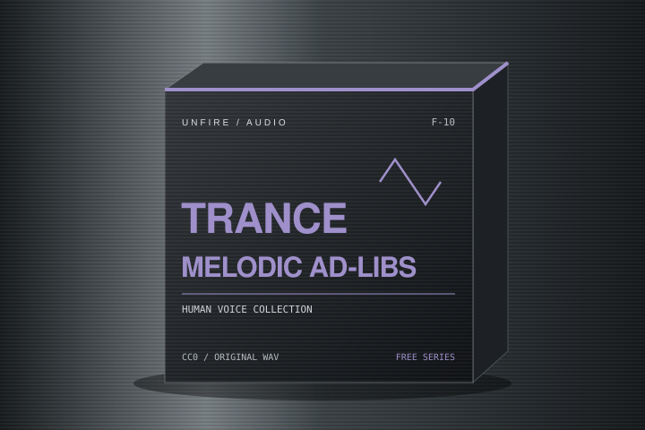

Trance / FREE VOCAL COLLECTION
Trance — Melodic Ad-libs
Free CC0 trance — melodic ad-libs WAV pack: 12 original Producer Space vocal recordings, with provenance and source metadata.

Included recordings
| Recording | BPM | Key | Source |
|---|---|---|---|
| ETV Adlib - 001 - 136 BPM - Eb minor | 136 | Eb minor | Source |
| ETV Adlib - 008 - 136 BPM - Eb minor | 136 | Eb minor | Source |
| ETV Adlib - 016 - 136 BPM - Eb minor | 136 | Eb minor | Source |
| ETV Adlib - 024 - 136 BPM - Eb Major | 136 | Eb Major | Source |
| ETV Adlib - 032 - 136 BPM - E minor | 136 | E minor | Source |
| ETV Adlib - 039 - 136 BPM - E minor | 136 | E minor | Source |
| ETV Adlib - 048 - 136 BPM - D minor | 136 | D minor | Source |
| ETV Adlib - 055 - 136 BPM - A minor | 136 | A minor | Source |
| ETV Adlib - 064 - 136 BPM - G minor | 136 | G minor | Source |
| ETV Adlib - 072 - 136 BPM - F minor | 136 | F minor | Source |
| ETV Adlib - 080 - 136 BPM - C minor | 136 | C minor | Source |
| ETV Adlib - 088 - 136 BPM - C minor | 136 | C minor | Source |
License and credits
Producer Space recordings, CC0 1.0. Original WAV files unchanged. Style tags describe suggested musical uses. Artistic audition pending. Source license.